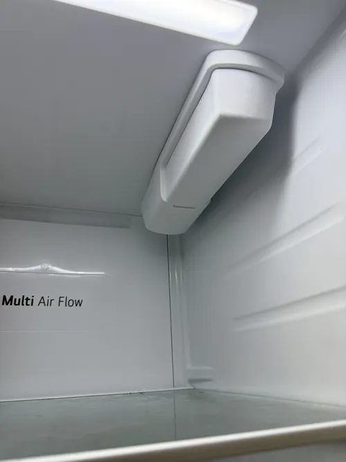

LG Refrigerator Repair: Smart Refrigerator Technology Explained
Refrigerators have changed dramatically over the past two decades. What was once a simple appliance designed to keep food cold has evolved into a sophisticated system that combines advanced cooling technology, electronic controls, digital sensors, Wi Fi connectivity, and intelligent performance monitoring. Modern LG smart refrigerators are among the most technologically advanced appliances found in today’s homes. Understanding how these systems work can help homeowners appreciate their benefits while also recognizing why professional LG refrigerator repair often requires specialized diagnostics and technical expertise.
Traditional refrigerators relied primarily on mechanical thermostats and simple cooling systems. Modern smart refrigerators operate very differently. They use electronic control boards, multiple temperature sensors, inverter compressor technology, airflow management systems, and digital communication networks that continuously monitor appliance performance. These systems work together to maintain precise temperatures, improve food preservation, and maximize energy efficiency.
One of the most important advancements in smart refrigerator technology is the use of inverter compressor systems. Unlike traditional compressors that repeatedly turn on and off, inverter compressors adjust their operating speed based on cooling demand. This allows the refrigerator to maintain more consistent temperatures while reducing energy consumption and minimizing wear on cooling components. As a result, food stays fresher longer and overall refrigerator performance becomes more stable.

Temperature management is another area where smart refrigerators excel. Modern LG refrigerators utilize multiple sensors positioned throughout the appliance. These sensors constantly monitor conditions inside both the refrigerator and freezer compartments. Information collected by the sensors is transmitted to the control system, which adjusts cooling performance automatically. This continuous monitoring helps maintain ideal storage conditions for different types of food.
Electronic control boards serve as the central management system for many smart refrigerator functions. These boards coordinate compressor operation, fan performance, defrost cycles, temperature regulation, ice production, and communication between refrigerator components. Because so many systems depend on electronic controls, accurate diagnostics are extremely important when troubleshooting modern refrigerator problems. Professional LG refrigerator repair technicians often use specialized testing procedures to evaluate these electronic systems properly.
Smart refrigerators also feature advanced airflow management. Cold air must be distributed evenly throughout the appliance to maintain stable temperatures. Multiple fans, air channels, and electronically controlled dampers help regulate airflow between compartments. This technology improves cooling consistency and helps eliminate temperature variations that can affect food quality.
Many LG smart refrigerators include Wi Fi connectivity and mobile app integration. These features allow homeowners to monitor refrigerator performance remotely, receive maintenance alerts, adjust settings, and access diagnostic information directly from a smartphone.
While these capabilities offer convenience, they also introduce additional electronic systems that require specialized knowledge when service becomes necessary.Ice makers and water dispensing systems have become increasingly sophisticated as well. Modern smart refrigerators monitor water flow, ice production, storage capacity, and operating temperatures automatically. Sensors and control systems work together to ensure efficient operation while reducing waste and maintaining consistent performance. When problems occur, professional LG refrigerator repair helps determine whether the issue involves water supply components, electronic controls, cooling systems, or communication networks.
Another benefit of smart refrigerator technology is self monitoring capability. Many models continuously evaluate system performance and generate diagnostic alerts when irregular conditions are detected. Error codes, warning messages, and maintenance notifications provide valuable information that can help identify developing problems before major failures occur. However, interpreting these alerts correctly often requires professional diagnostic experience.
Energy efficiency is one of the primary reasons smart refrigerator technology continues to evolve. Advanced cooling algorithms, inverter compressor systems, sensor networks, and intelligent operating controls allow modern refrigerators to maintain excellent performance while consuming less energy than many older appliances. These improvements help homeowners reduce utility costs while supporting environmentally responsible appliance operation.
Despite their advantages, smart refrigerators are more complex than traditional models. Because multiple electronic and mechanical systems work together, symptoms such as cooling problems, ice maker failures, temperature fluctuations, or error codes may have several possible causes. Accurate diagnostics remain essential because replacing parts without proper testing can increase repair costs and fail to resolve the underlying problem.
Professional LG refrigerator repair technicians receive ongoing training to stay current with evolving smart appliance technology. Understanding electronic communication systems, advanced sensors, inverter compressors, software controlled functions, and digital diagnostics is critical for servicing today’s refrigerators effectively.
Smart refrigerator technology continues to transform the way homeowners store food and manage household appliances. By combining advanced cooling systems, intelligent controls, energy efficient operation, and remote monitoring capabilities, modern LG refrigerators provide exceptional convenience and performance. Understanding how these systems work helps homeowners appreciate the value of professional LG refrigerator repair when service is needed and supports better long term appliance care.